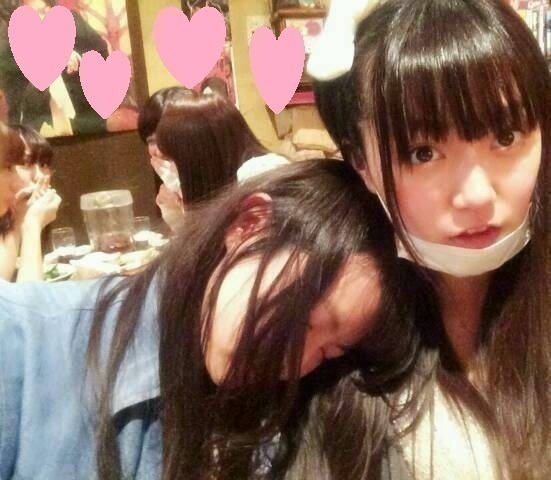
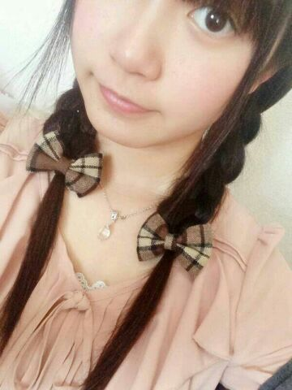
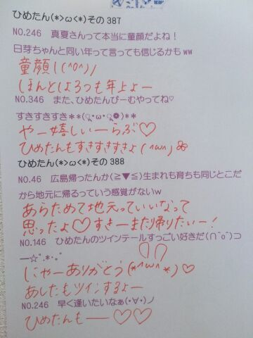
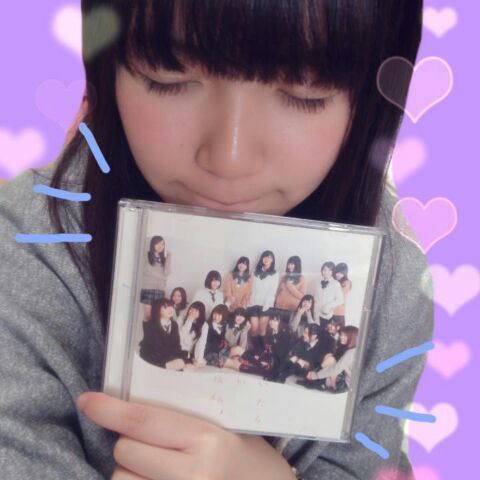
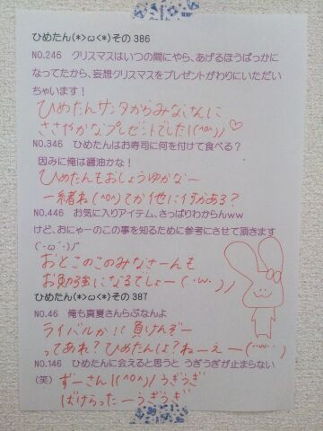

いつもみなさんが日記のコメント欄に
書いてくださる質問にたいして
ひめたんがお答えしてるんだけどね
今日は気になる質問を見つけたので
紹介してみますよー
 いつも質問返しばかりで大変だと思うので、
いつも質問返しばかりで大変だと思うので、
逆に質問ありますか？それではみなさんに質問です( ^O^ )ノ
◎ひめたんのこと好きー？
◎じゃあぷりんのことは好きー？
◎乃木坂ちゃんの全48曲の中でどの歌が好きー？
答えて答えてー♪♪

今日は甘えたちゃんな
万理華でした
あたしがおねーちゃんづらしてみた！
よしよししたり
あごすりすりしたり
彼女は大学生になってもかわらんな＊
あっ陽菜ちゃんがこっちみてる......

京都ー( ^O^ )
全国握手会、個別握手会と
2日間よろしくお願いします！
握手会が久々すぎて
んもうー待ちわびてたほんとに！
そしてライブも久々で
なんかもういろいろ久々なんだね！
これだから制作期間はうずうずうずうず......
明日の全握は
みおちゃん(堀未央奈ちゃん)と
ぺあです☆
みおちゃんとは初めてだから
みおちゃんファンのみなさんとも
はじめましてになるのかしら
よかったらひめたんとも
仲良くしてください(＊^_^＊)
みおちゃんのんびりがんばろうねー
そして個握ですが
京都のみなさんお待たせしました
京都は初の2部制になりましたー！
4部・5部に参加します♪
いくよーって方
楽しみにしてますよー(((o(*゜▽゜*)o)))
 ひめたんは犬派？猫派？
ひめたんは犬派？猫派？
それとも、ワオキツネザル派？いぬ派。
わんちゃん飼いたい(((o(*゜▽゜*)o)))
ヨーキーとトイプードル好きです。
ひめたんにはどうしてもしてしまう
クセとかってありますか？乃木ちゃん入るまでは
気づかなかったんだけど
やたらめったら手を口元に持って来たがるそう。
ひめたんの好きな馬の毛の色は何ですか？うーなんだろう
白馬で金の鬣(たてがみ)とか(＊^^＊)
ひめたんがよかったら、
僕とコンビを組んで芸人になりませんか？待ってあたしお笑いのセンス
ぜーんぜーんないからね
うーん考えときまーす♪♪
プリン味のゴキブリかー
ゴキブリ味のプリン
どちらかって言われたら？？想像したら、め、めまいが......ぱたっ
ひめたんの日記の
コメント欄下２ケタに46を踏んだ方へ
手書きでコメ返するコーナー
＼ ひめたん46 ／

いつもコメントたくさん
ありがとうございます
そう、今回のシングルが
「気づいたら片想い」なだけに
僕は私はひめたんに
気づいたら片想いしてたーって方が
たくさんいらっしゃったけど
え、は？ちょっと何言ってんの？
ひめたんだってあなたのこと好きだよ
これって両想いじゃないの？ねー？
ってゆーツンデレごっこを
ひとりでしてましたー(〃ω〃)んふえ
(＊´・ω・＊)

本日「気づいたら片想い」リリース！
制作に携わってくださった
すべての方に感謝です
ありがとうございました(＊^^＊)
そしてお手に取ってくださった
あなたに感謝です
かわいがってあげてねよろしくね♪♪
さらに、なんと光栄なことに
オリコンデイリーチャート1位いただきました！
なんということだー(´nωn`)
本当にありがとうございます
私含め乃木坂ちゃんはみんな幸せ者ですなー
今週末からは握手会も始まるし
今からうきうきしてる！
さてさて、
今回のシングルについて
ちらっと語ろうかなーなんて思ったり。
参加楽曲は
type-C「生まれたままで」
ひめたんの歌ってるパートは
んまあーそうだな
きゅんきゅん王国のみなさんの耳なら
ひめの歌声には非常に肥えてるって信じてるから
ここで答えは言わないよ( ´ ▽ ` )笑
それでもわからんなー
気になって夜は8時間しか眠れないなーって方は
乃木どこスタジオライブが全握で
チェーーーーーーーックしてみてね♪
ちなみに夜は8時間しかってやつは
ほんとにコメント最近こればっかだからね！
だからひめたんがみんなの真似したんだからね
ひめたんが悪いみたいな空気やめてね頼んだよ！！
中の冊子とゆーか歌詞カードは
なかいさんで1ページ飾ってるよ(＊´ω`＊)
なかいさん推し得ってやつね♪♪
そして特典映像のエチュード
ひめたんたちのチームは
type-Aに収録されていると聞きまして。
なんで他人事なのかってゆーと
自分の姿を観るのがイヤで
まだチェックしてないんだよね(´・ω・｀)あほ
ほんっとプロとしてどうかのかしらこのコ。
自分のことが好きじゃないと
こうもなるみたいでほんとに情けない......
でもね頑張りました！
いこたん(生駒里奈ちゃん)
まいまい(深川麻衣ちゃん)
みおちゃん(堀未央奈ちゃん)
わかつき(若月佑美ちゃん)
とひめたんです！ふわふわめんばー揃ったねー
人魚になりました(((o(*゜▽゜*)o)))
さらにレコチョクさんで
着うた&フルサイズ配信スタートしました！
 あのさ。ひめたんはさ、
あのさ。ひめたんはさ、
ショートケーキの......ひゅ〜〜〜〜〜(春一番)いやー待ってその焦らし方はないわよ
帰ってきてーーーヽ(´・ω・｀ヽ)
乃木坂で美容に詳しいのって誰かな？これに関してはねー
ほんとにみんな詳しいから
誰って言えないなー。
みんな勉強熱心で研究家だからね
ステキです◎
可愛い可愛いひめたんみたいになれるように、
そして美容のために
半身浴を始めようと思うんだけど、
ひめたんだったら右半身と左半身
どっちにする？ひめたんはかわいくないけど大事なことよねー
で、えーっと、うん？
右半身と左半身ってまた高度なことを。
右だけ血行よくなるよーってかそれ以前に
物理的に無理だと思うの(´；；｀)
テストの点数が低かったから
処分するために食べたいんだけど、
テスト食べるときのオススメの味はなんですか？ちなみに世界史ですいや科目とか何でもいいです
食べたいんなら止めないけどさ
おとなしくシュレッダーかけなよー
多分美味しくないし、お腹壊すよー(´・ω・｀)
最近ひめたんの魅力に気づきました！笑
遅いかな？そんなことないよー
嬉しいーありがとーんふー♪♪
これからなかよくしてねよろしくね！
私は今年から就活なのですが
おこがましいかもしれませんが
ひめたんからやる気の出る
応援メッセージが欲しいです！おこがましくないです全っ然！
就活生のみなさん応援してます∩^^∩
笑顔でね！自分らしさを大切にしてくださいね。
ひめたんの日記の
コメント欄下２ケタに46を踏んだ方へ
手書きでコメ返するコーナー
＼ ひめたん46 ／

え、ちょっと、みんなみて！
このうさぎさん
上出来だと思わない( ^O^ )？
とゆーことで
いつもたくさんの楽しいコメント
ありがとうございます＊
すでにCDの感想を書いてくださってる方も
たくさんいらっしゃって
読ませていただきましたよーんぬ
がんばって作り上げた作品が
みなさんに届いたんだなーって思うと嬉しくて、
もっと頑張らなきゃ！ってなるのー♪
それから、ウソつきさんあんまいなかったなー
ひめたんは純粋でぴゅあで無垢な少女なので
あんまパンチの効いたウソは
やめてよねー( ^O^ )
かわいいウソなら許したげますよー
そーゆー日だったからねー
(＊´・ω・＊)